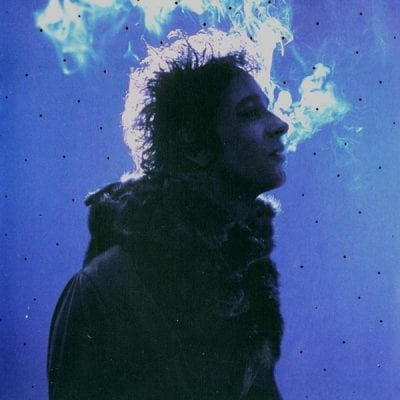
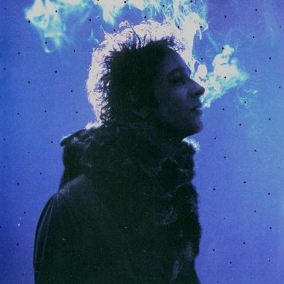

Gustavo Cerati nació el 11 de agosto de 1959 en Capital Federal, Buenos Aires, Argentina. Su carrera musical comienza en el año 1983, aunque antes de eso, ya a los nueve años estudiaba guitarra, a los doce conformó un trío con el cual se presentaba en fiestas particulares, participaba de todos los eventos que se realizaban en el colegio religioso al que concurría, y llegó a dirigir el coro de la iglesia. Sus primeras influencias musicales fueron grupos como King Crimson y especialmente The Beatles. También David Bowie, Pink Floyd y guitarristas como Jimmy Page (Led Zeppelin) y Ritchie Blackmore (Deep Purple)